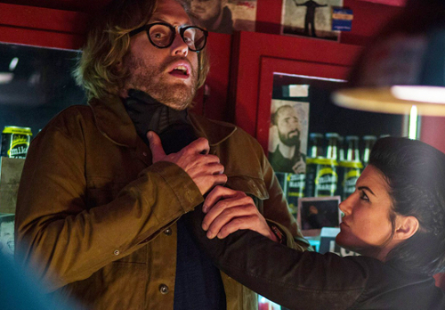

T.J. Miller
Originaire du Colorado, Todd Joseph Miller est un acteur et humoriste plus connu sous le nom de T.J Miller. Après un rapide passage à l'Université Georges Wahsington, T.J Miller se lance vite dans le stand-up et la comédie. En 2007, J.T Miller est désigné comme le nouveau visage du Festival Comedy Art Festival d'Aspen. Après une apparition dans la série télévisée Covoitureurs et l'animation d'une radio humoristique baptisée Red Bar, T.J Miller fait son premier stand-up dans le talk-show Conan.
Outre l'humour T.J Miller passe aussi à l'action en apparaissant aux castings des longs métrages Cloverfield (2008), Unstoppable ou le Voyage de Gulliver (2010). En phase avec les talents humoristiques de l'acteur, T.J Miller intervient aussi dans la comédie Our Idiot Brother plébiscitée au Festival de Sundance.
Dans Deadpool, il joue le rôle de La Fouine, un nerd mordu du personnage principal, une démonstation de plus que le film brise le 4e mur et est conscient de lui-même.